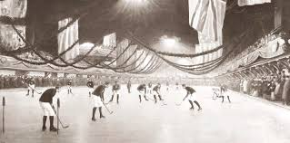
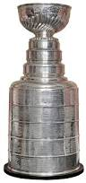
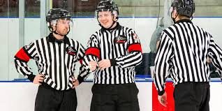
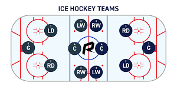

First Game.
The origins of the first hockey game will never truly know but many believe the first organized game of ice hockey was in Montreal in 1875. People also believe that the first set of rules was made in 1877 by the Montreal Gazette. But research states that the first organized leauge was actually in England and the rules also came from england too. However it was Canada who started making the big contributions. By the 20th century the canadian rules were in place. Hockey is a stick and ball game and those have been around forever. People believe that games like hockey have been played in Ancient Greece and Egypt. Others people believe it originated from the Indigenous peoples. But researchers believe it came from Scotland and England.
Stanley Cup
The Stanley cup is the oldest trophy competed for in North America. It was first awarded in 1982 in the Montreal Amateur Athletic Association. But since 1962 its been under control of the NHL. The team that has won the most Stanley Cups are the Montreal Canadiens at 24 wins. In 1888 Sir Frederick Arthur Stanley watched his first hockey game from the Montreal Amatuer Athletic Association(MAAA). Lord Stanley instantly expressed his love for the game and announced he'd donate a trophy on March 18 1982. The Stanley Cup was first a small silver bowl made in London, England and called the Dominion Hockey challenge cup, But it was quickly known as the Stanley Cup, The standard practice to engrave individuial names started in 1924.
Officials
Officials jobs are to enforce and make sure that the game goes smoothly. Although it may not seem like it there are many different types of officials. First of all there is the On ice official who is there on the ice dropping the puck,giving penalties etc. There are 2 different types of on-ice officials, the linesmen and the referees. First lets start with the referees, the referees are there to give out penalties, they also drop the puck for the center ice faceoffs. Linemens however are there to watch blue/red line violations including icings and offsides, they also are responsible for breaking up fights and scrumbs when necessary. Then there are the off-ice officials, the timekeepers and the goal judges. Their job is to make sure that the puck crossed the line completey or crossed the line in time for it to be a good goal. These officials are needed when the coach of one team challenges a play because they were not happy with the given call.
Positions
Back in 1875 in the first indoor hockey game they had 9 people on each team for a total of 18, the defensemen were also called backs and half-backs instead of defense as we know today. Then in 1880 there was a change, people realised that it was a bit too crowded with 18 people on the ice, so they decided to make it 7on7 (14 people), taking away 1 back and 1 forward. After this a big change in 1892 happened where one half back became a forward and the other became a cover-point. (cover-points and points were just what they used to call backs and half backs) Then in 1914 with the game escalating quickly in speed they decided to make only 3 forwards and 2 defensemen, which is still the setup that we use to this day.(points were then switched to defensemen)
HTML and CSS Validated